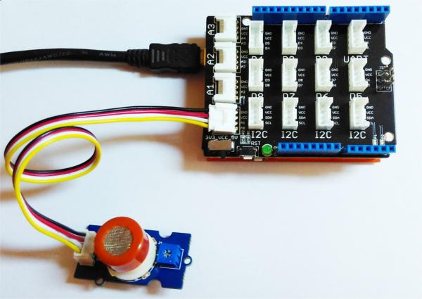

The Grove - Gas Sensor module is useful for gas leakage detecting(in home and industry). It can detect LPG, i-butane, methane, alcohol, Hydrogen, smoke and so on. Measurements can be taken as soon as possible based on its fast response time. Also the sensitivity can be adjusted by the potentiometer.
Each Grove - Gas Sensor Kit consists of one gas sensor base and four detectors. You can switch the detector on the base according to specific target gases.
Connect the module with Grove Shield using A0 like following picture and use the program below to gain the voltage. The higher the concentration of the gas is, the bigger the output voltage of the SIG pin gets. Sensitivity can be regulated by rotating the potentiometer. Please note that the best preheat time of the sensor is about 24 hours. For the detailed information about the sensor, please refer to the datasheet.
